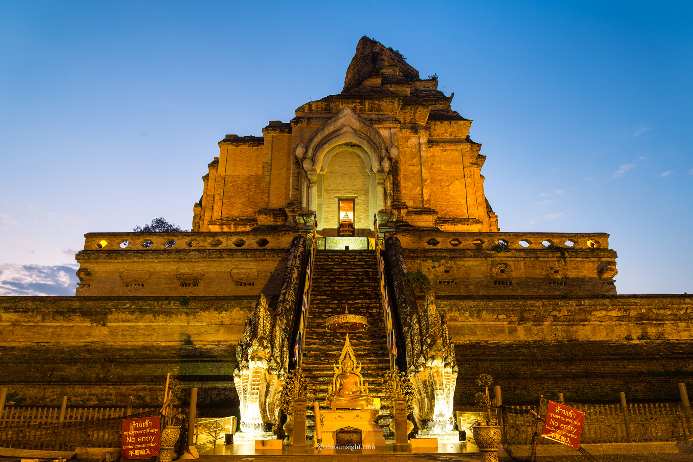

วัดเจดีย์หลวง
วัดเก่าแก่ใจกลางเมืองเชียงใหม่ สร้างในสมัยราชวงศ์ล้านนา มีเจดีย์สูงใหญ่งดงาม สะท้อนสถาปัตยกรรมโบราณ

ข้อมูลทั่วไป
- ที่ตั้ง: ถนนพระปกเกล้า ตำบลพระสิงห์ อำเภอเมืองเชียงใหม่ (บริเวณคูเมืองเก่า)
- ผู้สร้าง: พระเจ้าแสนเมืองมา แห่งราชวงศ์เม็งราย (ราว พ.ศ. 1928)
- ความสูงเดิมของเจดีย์: ประมาณ 80 เมตร (เหลือราว 55 เมตรหลังแผ่นดินไหว พ.ศ. 2088)
- ความสำคัญ: เคยประดิษฐาน “พระแก้วมรกต” ก่อนถูกอัญเชิญไปวัดพระแก้ว กรุงเทพฯ
ไฮไลต์ของวัดเจดีย์หลวง
- 1. เจดีย์หลวง
- - เป็นสถาปัตยกรรมแบบล้านนา ขนาดใหญ่และทรงพลัง
- เคยประดิษฐาน “พระแก้วมรกต” ซึ่งปัจจุบันอยู่ที่วัดพระศรีรัตนศาสดาราม (วัดพระแก้ว) กรุงเทพฯ
- 2. วิหารหลวง
- อาคารวิหารหลักของวัด ภายในประดิษฐาน “พระมหามณีรัตนปฏิมากรจำลอง”
- มีจิตรกรรมฝาผนังลวดลายล้านนาสวยงาม
- 3. เสาอินทขิล (เสาหลักเมืองเชียงใหม่)
- เสาไม้ศักดิ์สิทธิ์ของเมืองเชียงใหม่ ประดิษฐานอยู่ภายในวิหารเล็กด้านหน้า
- มีความเชื่อว่าช่วยคุ้มครองบ้านเมืองให้ร่มเย็นเป็นสุข
- ในเดือนพฤษภาคมจะมีงานประเพณีบูชาเสาอินทขิล
- 4. พระวิหารจตุรมุข
- วิหารที่ประดับลวดลายปูนปั้นสวยงาม สะท้อนศิลปะล้านนาแท้
การเดินทาง
- จากสนามบินเชียงใหม่: ประมาณ 15 นาที
- การเดินทางในเขตเมืองเก่า: สามารถเดิน, ปั่นจักรยาน, หรือใช้รถสองแถวแดงได้สะดวก
ข้อควรรู้
- ไม่เก็บค่าเข้าชม (แต่สามารถทำบุญได้ตามศรัทธา)
- ควรแต่งกายสุภาพและถอดรองเท้าก่อนเข้าวิหาร
- ภายในวัดมีลานกว้างและร่มรื่น เหมาะสำหรับการเดินชมอย่างช้า ๆ